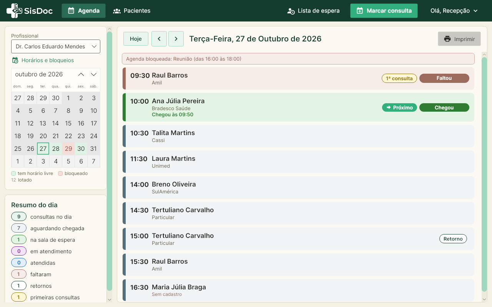
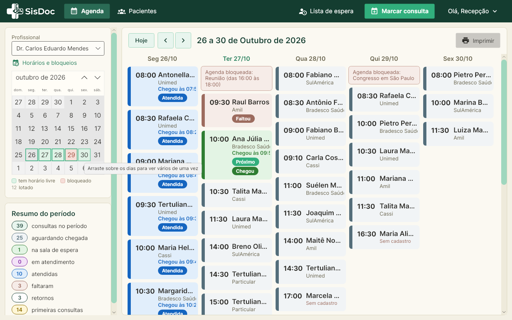
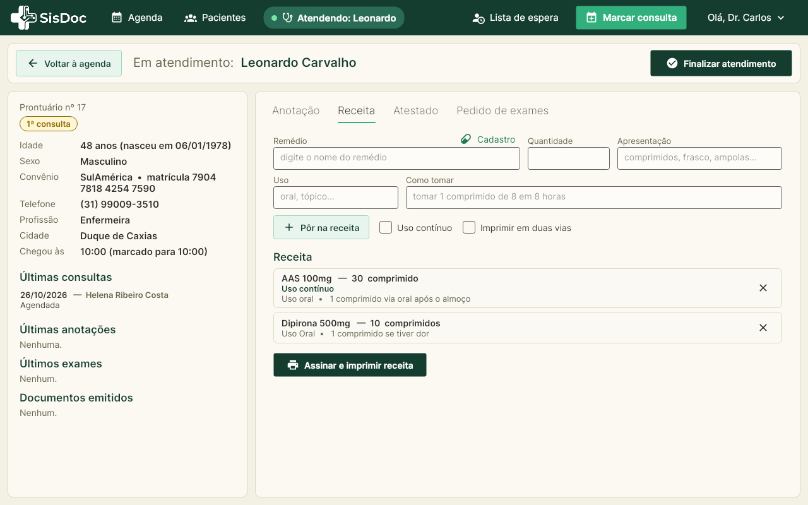
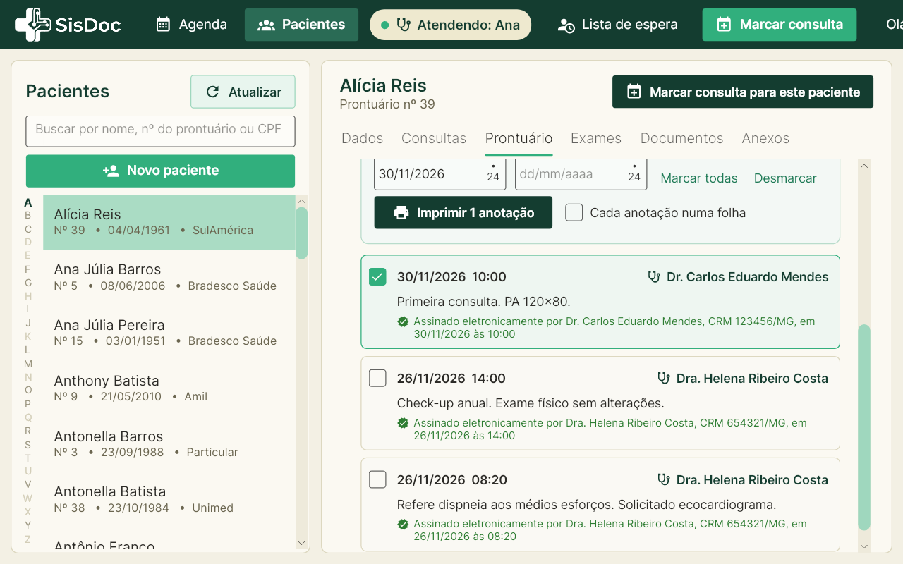
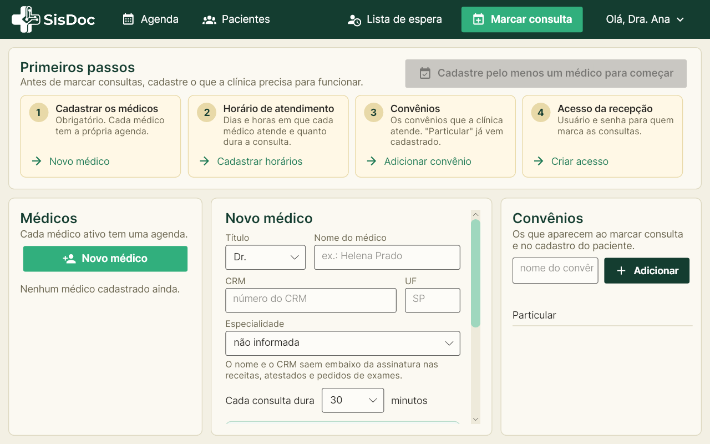

Recepção
Cuida da agenda do dia sem ver o que é sigiloso.
- Marca, muda e desmarca consultas
- Registra chegada e faltas
- Cadastra pacientes e anexa documentos
- Não vê prontuário nem exames
Sistema para consultório médico
O SisDoc marca consultas, avisa quem chegou, faz receitas, atestados e pedidos de exame e guarda o histórico de cada paciente. Funciona em todos os computadores da clínica, mesmo sem internet.

Para cada pessoa da clínica
Quem entra no SisDoc escolhe o próprio usuário, e a tela se ajusta ao trabalho de cada um.
Cuida da agenda do dia sem ver o que é sigiloso.
Atende com o histórico do paciente ao lado.
Deixa a clínica pronta e os dados seguros.
Recursos
Tudo o que acontece com o paciente, da marcação à consulta, fica num só lugar e aparece em todos os computadores ao mesmo tempo.
Agenda
Cores mostram quem chegou, quem está atrasado e quem é o próximo. Encaixes aparecem lado a lado, e a lista de espera adianta a consulta quando abre uma vaga.

Atendimento
A ficha do paciente fica à esquerda e as abas de anotação, receita, atestado e pedido de exames à direita. Os documentos saem prontos para o papel timbrado, com o nome e o CRM do médico.

Pacientes
Dados, consultas, prontuário, exames, documentos emitidos e anexos numa ficha só. Cada anotação mostra quem escreveu e quando.

Primeiro uso
Na primeira vez, o SisDoc mostra o que falta cadastrar: médicos, horários, convênios e o acesso da recepção. Quem já usa o SisDoc antigo traz tudo de lá com um clique.

E também
Recepção e consultórios usam os mesmos dados, atualizados na hora.
Os dados ficam no computador principal da clínica, não na nuvem.
Uma cópia dos dados é feita sozinha, às 21:00, no computador principal.
Quando sai uma versão nova, o SisDoc avisa e se instala com um clique.
Consultas, faltas, convênios, pacientes novos e aniversariantes, por período e por médico.
Cada um entra com o próprio usuário e vê só o que o perfil permite.
Aumente ou diminua a letra de todas as telas com Ctrl + +.
Aperte F1 em qualquer tela para ver o passo a passo.
Como começar
Um arquivo só, que já traz o programa e o banco de dados. Não precisa instalar mais nada.
O que fica ligado o dia todo. Depois, instale nos outros computadores da clínica.
Médicos, horários e convênios. Em seguida, a agenda já está pronta para marcar.
Perguntas frequentes
Não. Os computadores da clínica conversam pela rede local. A internet só é usada para baixar o instalador e as atualizações.
No computador principal da clínica, que guarda o banco de dados e faz um backup todo dia às 21:00. Nada é enviado para a internet. De vez em quando, copie a pasta de backups para um HD externo.
Quantos a clínica tiver, desde que estejam na mesma rede. Instale primeiro no computador principal e depois nos outros, com o mesmo instalador.
Windows 10 ou 11, de 64 bits, com pelo menos 4 GB de memória. O computador principal, que guarda os dados, precisa de 5 GB livres no disco e de preferência 8 GB de memória. Não funciona em Mac nem no celular. Veja todos os requisitos mínimos.
Não. Na primeira vez que abrir, escolha Importar do SisDoc antigo: médicos, convênios, pacientes, consultas, prontuários e anexos vêm junto, e os usuários e senhas continuam os mesmos. O arquivo antigo só é lido, nunca alterado.
Na primeira vez em cada computador, aparece a tela Ativar o SisDoc neste computador. A ativação é feita pelo responsável pelo SisDoc, uma vez só: chame-o na hora de instalar.
Sozinho. Ao abrir, o SisDoc avisa quando há versão nova: clique em Atualizar agora e aceite a permissão do Windows. Os dados da clínica não mudam. Veja o que mudou em Novidades.
Baixe o instalador, siga o passo a passo e, se tiver dúvida, consulte o manual.